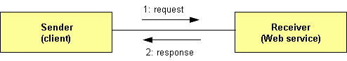

Procesos BPEL síncronos y asíncronos
Ya hemos visto que un proceso BPEL se "expone" como un servicio web. El proceso BPEL puede ser síncrono o asíncrono. Un proceso BPEL síncrono devuelve una respuesta al cliente inmediatamente después de procesar la petición y el cliente permanece bloqueado mientras se ejecuta el proceso BPEL.
Un proceso BPEL asíncrono no bloquea al cliente. Para devolver un resultado al cliente, un proceso asíncrono utiliza una llamada "callback". Sin embargo, no es imprescindible que el proceso BPEL devuelva una respuesta.
Por lo tanto, uno de los requerimientos técnicos importantes a tener en cuenta cuando se diseñan procesos de negocio que implican la ejecución de múltiples servicios Web que se ejecutan durante periodos largos de tiempo, es la capacidad de poder invocar servicios de forma asíncrona.
La invocación de servicios de forma asíncrona es vital para alcanzar la fiabilidad, escalabilidad, y adaptabilidad requeridas hoy en día en entornos IT (Information Tecnology). Mediante un soporte asíncrono, un proceso de negocio puede invocar servicios Web de forma concurrente (en lugar de secuencialmente), de forma que se mejora el rendimiento. Por ejemplo, un sistema de compras podría necesitar interactuar con múltiples servicios Web de suministradores al mismo tiempo, para así buscar el suministrador que le ofrezca el precio más bajo y la fecha de entrega más temprana. Este soporte asíncrono para servicios Web puede conseguirse mediante técnicas de correlación.
En definitiva, la elección del tipo de proceso BPEL es muy importante. La mayoría de procesos del "mundo real" requieren largos periodos de ejecución, de forma que los modelaremos como asíncronos. Sin embargo, también hay muchos procesos que se ejecutan en un periodo relativamente corto de tiempo, o que necesitan que el cliente espere a que se procese la respuesta. En esta sesión explicaremos las diferencias de implementación entre los dos tipos de procesos (síncronos y asíncronos) y veremos algún ejemplo.
Invocación de servicios Web
En la sesión anterior hemos visto que un proceso BPEL se codifica como un documento XML utilizando el elemento raíz <process>. Dentro del elemento <process>, un proceso BPEL normalmente contendrá el elemento <sequence>. Dentro de la secuencia, el proceso primero esperará la llegada de un mensaje para comenzar la ejecución del proceso. Esto se modela con la construcción <receive>. Seguidamente el proceso invocará a los servicios Web relacionados, utilizando la consrucción <invoque>. Tales invocaciones pueden realizarse secuencialmente o en paralelo. Si queremos realizar las llamadas secuencialmente simplemente escribiremos una sentencia <invoque> para cada invocación y los servicios Web serán invocados en dicho orden. Esto se muestra en el siguiente código:
<!-- Invocación secuencial de servicios Web-->
<process ...>
...
<sequence>
<!-- espera a una petición para comenzar el proceso -->
<receive.../>
<!-- invoca un conjunto de servicios Web, de forma secuencial -->
<invoque .../>
<invoque .../>
<invoque .../>
...
</sequence>
</process>
Para invocar a servicios Web de forma concurrente, podemos utilizar la construcción <flow>. En el siguiente ejemplo, las tres operaciones <invoque> se ejecutarían concurrentemente.
<!-- Invocación concurrente de servicios Web-->
<process ...>
...
<sequence>
<!-- espera a una petición para comenzar el proceso -->
<receive.../>
<!-- invoca un conjunto de servicios Web, concurrentemente -->
<flow>
<invoque .../>
<invoque .../>
<invoque .../>
</flow>
...
</sequence>
</process>
También podemos combinar y anidar las construcciones <sequence> y <flow>, lo que nos permite definir varias secuencias que se ejecutarían concurrentemente. En el siguiente ejemplo hemos definido dos secuencias, una formada por tres invocaciones, y otra formada por dos. Ambas secuencias se ejecutarían concurrentemente:
<!-- Invocación concurrente de secuencias de servicios Web-->
<process ...>
...
<sequence>
<!-- espera a una petición para comenzar el proceso -->
<receive.../>
<!-- invoca dos secuencias concurrentemente -->
<flow>
<!-- ejecución secuencial -->
<sequence>
<invoque .../>
<invoque .../>
<invoque .../>
</sequence>
<!-- ejecución secuencial -->
<sequence>
<invoque .../>
<invoque .../>
</sequence>
</flow>
...
</sequence>
</process>
Invocación de servicios Web asíncronos
Hay dos tipos operaciones de servicios Web:
-
Operaciones síncronas request-reply: En este caso
enviamos una petición y esperamos el resultado. Normalmente las operaciones no
necesitan demasiado tiempo de procesamiento, por lo que es razonable esperar hasta
que nos llegue la respuesta. Esto se muestra en la siguiente Figura.

-
Operaciones asíncronas: Normalmente, estas operaciones realizan un
procesamiento que requiere un largo tiempo hasta su finalización. Por lo tanto, no
bloquean al proceso que realizó la llamada. Si dichas operaciones requieren que los
resultados se envíen de vuelta al cliente, se realizan callbacks, tal y como
mostramos a continuación. A este tipo de operaciones se les denomina también operaciones
one-way
Los callbacks normalmente necesitarán relacionarse con las peticiones originales, para así poder enviar la respuesta al cliente correcto. A este proceso lo llamaremos correlación, y lo explicaremos más adelante.
Utilizando la construcción <invoque> podemos invocar ambos tipos de operaciones: síncronas y asíncronas. Si invocamos una operación síncrona, el proceso de negocio se espera hasta recibir la respuesta (en este caso, tenemos que incluir el atributo con el mensaje de respuesta). No necesitamos utilizar una construcción especial para recuperar la respuesta.
Ejemplo de invocación síncrona:
<!--invocación SINCRONA sobre el servicio Employee Travel Status-->
<invoke partnerLink="employeeTravelStatus"
portType="emp:EmployeeTravelStatusPT"
operation="EmployeeTravelStatus"
inputVariable="EmployeeTravelStatusRequest"
outputVariable="EmployeeTravelStatusResponse" />
Con las operaciones asíncronas, la construcción <invoque> solamente realiza la primera parte de la llamada, la que invoca la operación. Para recibir un resultado (si es que se devuelve al cliente), necesitamos utilizar una construcción separada <receive>. Con <receive>, el proceso de negocio esperará la respuesta. Entre las operaciones <invoque> y <receive> podríamos realizar cualquier otro procesamiento en lugar de esperar la respuesta, tal y como ocurre en una invocación síncrona. El esquema para una invocación de una operación asíncrona es:
<!-- Invocación asíncrona -->
<process ...>
...
<sequence>
<!-- espera a una petición para comenzar el proceso -->
<receive.../>
<!-- invoca una operación asíncrona -->
<invoque .../>
<!-- hacer algo -->
<!-- esperar el Callback-->
<receive.../>
...
</sequence>
</process>
A continuación mostramos un ejemplo concreto de un uso asíncrono de la actividad invoque:
<!--invocación ASINCRONA sobre el servicio American Airlines-->
<invoke partnerLink="AmericanAirlines"
portType="aln:FlightAvailabilityPT"
operation="FlightAvailability"
inputVariable="FlightDetails" />
<receive partnerLink="AmericanAirlines"
portType="aln:FlightCallbackPT"
operation="FlightTicketCallback"
variable="FlightResponseAA" />
Igual que con las operaciones síncronas, podemos utlizar pares asíncronos <invoque>/<receive> dentro de elementos <flow> para realizar varias invocaciones concurrentes.
Procesos BPEL síncronos frente a procesos BPEL asíncronos
Los procesos BPEL difieren en el protocolo de intercambio de mensajes. Un proceso BPEL síncrono es aquel que devuelve al cliente los resultados de procesamiento de forma inmediata. El cliente se bloquea hasta que los resultados son devueltos. El proceso BPEL tendrá una operación de tipo request-response. Este tipo de proceso típicamente sigue la siguiente lógica y sintaxis:
<!-- Estructura de un proceso BPEL síncrono -->
<process ...>
...
<sequence>
<!-- espera a una petición para comenzar el proceso -->
<receive.../>
<!-- invoca a un conjunto de servicios relacionados -->
...
<!-- devuelve una respuesta síncrona al cliente -->
<reply .../>
...
</sequence>
</process>
Para que un proceso BPEL sea síncrono, todos los servicios Web a los que invoca tienen que ser también síncronos.
Un proceso BPEL asíncrono no utiliza la cláusula <reply>. Si dicho proceso tiene que enviar una respuesta al cliente, utiliza la cláusula <invoque> para invocar a la operación callback sobre el port type del cliente. Recuerda que un proceso BPEL no necesita devolver nada. La estructura de un proceso BPEL asíncrono es:
<!-- Estructura de un proceso BPEL asíncrono -->
<process ...>
...
<sequence>
<!-- espera a una petición para comenzar el proceso -->
<receive.../>
<!-- invoca a un conjunto de servicios relacionados -->
...
<!-- invoca a un callback sobre el cliente (si es necesario) -->
<invoque .../>
...
</sequence>
</process>
Podemos utilizar un proceso BPEL asíncrono en un escenario en el que el calcular los resultados conlleva mucho tiempo. Cuando utilizamos un proceso BPEL asíncrono, es necesario que el cliente no se quede bloqueado en la llamada. En su lugar, el cliente implementa una interfaz callback y una vez que los resultados están disponibles, el proceso BPEL simplemente realiza una invocación callback sobre el cliente.
Partner Link Types en procesos asíncronos
En la sesión anterior ya hemos comentado que los partner links (definido en el fichero del proceso BPEL) describen las relaciones con los partners, en las que éstos pueden: (a) invocar al proceso BPEL; (b) ser invocados por el proceso BPEL; (c) son invocados por el proceso y a su vez invocan al proceso BPEL.
La situación (c) se da en una invocación asíncrona. En este caso, un servicio Web ofrece un portTypeA, a través del cual el proceso BPEL invoca a las operaciones sobre dicho servicio. El proceso BPEL tiene también que proporcionar un portType (al que llamaremos portTypeB) a través del cual el servicio Web invoca a la operación callback. Esto se muestra en la siguiente figura:
Como acabamos de ver, para describir las situaciones en las que el servicio Web es invocado por el proceso BPEL y viceversa debemos definir una perspectiva concreta. Por ejemplo podemos seleccionar la perspectiva del proceso y describir el proceso como aquél que requiere el portTypeA sobre el servicio Web y que proporciona el portTypeB al servicio Web. Alternativamente, podemos seleccionar la perspectiva del servicio Web y describir al servicio Web como aquél que oferta el portTypeA al proceso BPEL y que requiere el portTypeB del proceso.
Los partner link types permiten modelar las relaciones entre un servicio Web y un proceso BPEL, declarando cómo interactúan las dos partes y lo que cada parte proporciona. El uso de los partner link types no requiere el utilizar una perspectiva concreta; en vez de eso, se definen roles. Un partner link type debe tener al menos un rol y puede tener como mucho dos roles. Para cada rol debemos especificar el portType que se usará para la interacción.
En el siguiente ejemplo, se define un partnerLinkType denominado insuranceLT. Éste define dos roles, el rol insuranceService y el rol insuranceRequester. El primero de ellos proporciona el port type ComputeInsurancePremiumPT desde el espacio de nombres ins. El rol insuranceRequester proporciona el port type ComputeInsurancePremiumCallbackPT desde el espacio de nombres com. Este último port type se utiliza para la operación callback. Esta declaración especifica los roles de servicio y callback:
<!-- partnerLinkType con roles servicio y callback; definido en WSDL-->
<partnerLinkType name="insuranceLT"
xmlns="http://schemas.xmlsoap.org/ws/2003/05/partner-link/">
<role name="insuranceService">
<portType name="ins:ComputeInsurancePremiumPT" />
<role/>
<role name="insuranceRequester">
<portType name="com:ComputeInsurancePremiumCallbackPT" />
</partnerLinkType>
Como ya hemos visto en la sesión anterior, cuando se utilizan operaciones síncronas solamente se utiliza un rol. Recordemos también que la definición del partnerLinkType forma parte del fichero WSDL (del proceso BPEL).
Para cada partner link, definido en el fichero que implementa el proceso BPEL (fichero con extensión .bpel), tenemos que indicar los siguientes atributos:
- name: Sirve como referencia para las iteracciones entre partners
- partnerLinkType: Define el tipo de partner link
- myRole: Indica el rol del proceso BPEL
- partnerRole: Indica el rol del partner
Definiremos los dos roles (myRole y partnerRole) solo si el partnerLinkType especifica dos roles. Volvamos al ejemplo anterior, en el que hemos definido el partnerLinkType insuranceLT. Para definir un partnerLink denominado insurance, caracterizado por el partnerLinkType insuranceLT, necesitamos especificar ambos roles, debido a que se trata de una relación asíncrona. El rol del proceso BPEL (myRole) se describe como insuranceRequester, y el rol del partner se describe como insuranceService. El código asociado se muestra a continuación:
<!-- definición de partnerLink en fichero BPEL--> ... <partnerLinks> <partnerLink name="insurance" partnerLinkType="tns:insuranceLT" myRole="insuranceRequester" partnerRole="insuranceService"/> </partnerLinks> ...
Ciclo de vida de los procesos de negocio
Cada proceso BPEL tiene un ciclo de vida bien definido. Para comunicarse con los partners BPEL utiliza los servicios Web. Los servicios Web proporcionan un modo sin estado para la invocación de operaciones. Esto significa que un servicio Web no almacena la información dependiente del cliente entre invocaciones de operaciones. Por ejemplo, consideremos un carrito de la compra en el que un cliente utiliza una operación para añadir elementos en el carrito. Por supuesto, pueden haber varios clientes simultáneos utilizando el carrito de la compra a través del servicio Web. Sería deseable que cada cliente tuviese su propio carrito. Para conseguir esto utilizando servicios Web, cada cliente tendría que pasar su identidad en cada invocación de la operación añadir. Esto es debido a que el modelo de servicios Web es un modelo sin estado (un servicio Web no distingue entre clientes diferentes).
Para procesos de negocio, un modelo sin estado no es adecuado. Consideremos, por ejemplo, un escenario de viajes en el que un cliente envía una petición de viaje, a través de la cual se inicia el proceso de negocio. El proceso de negocio se comunica con varios servicios Web y envía en primer lugar una nota de confirmación del viaje al cliente. Más tarde envía una confirmación del hotel y una factura. El proceso de negocio tiene que recordar cada interacción para poder conocer a quién tiene que devolver los resultados.
A diferencia de los servicios Web, los procesos de negocio BPEL siguen un modelo con estado y soportan interacciones que llevan mucho tiempo con un ciclo de vida bien definido. Para cada interacción con el proceso, se crea una instancia del proceso. Por lo tanto podemos pensar en la definición del proceso BPEL como una plantilla para crear instancias de procesos. Esto es bastante similar a la relación clase-objeto, en donde las clases representan plantillas para crear objetos en tiempo de ejecución.
En BPEL no se crean instancias de forma explícita igual que en los lenguajes de programación (no hay un comando new, por ejemplo). En vez de eso, la creación se hace de forma implícita y tiene lugar cuando el proceso recibe el mensaje inicial que inicia el proceso. Esto puede ocurrir con las actividades <receive> o <pick>. Ambas proporcionan un atribudo denominado createInstance. Si este atributo se fija a "yes", indica que cuando se ejecuta dicha actividad se crea una nueva instancia del proceso de negocio.
Un proceso de negocio puede terminar normal o anormalmente. Una terminación normal ocurre cuando todas las actividades del proceso se completan. Una terminación anormal tiene lugar cuando, o bien se produce un fallo dentro del ámbito del proceso, o una instancia del mismo termina de forma explícita utilizando la actividad <terminate>.
En procesos de negocio complejos, más de una actividad de inicio del proceso podría ser ejecutada de forma concurrente. Dichas actividades de inicio requerirán el uso de conjuntos de correlación.
Correlations
A diferencia de los servicios web, que son un modelo sin estado, los procesos de negocio requieren el uso de un modelo con estado. Cuando un cliente inicia un proceso de negocio, se crea una nueva instancia. Esta instancia "vive" durante la ejecución del proceso de negocio. Los mensajes que se envían a un proceso de negocio (utilizando operaciones sobre los port types y ports) necesitan ser entregados a la instancia correcta de dicho proceso de negocio.
BPEL proporciona un mecanismo para utilizar datos específicos del negocio para mantener referencias a instancias específicas del proceso de negocio. A esta característica la denomina correlación (correlation). En definitiva se trata de hacer corresponder un mensaje de entrada en la máquina BPEL con una instancia específica de un proceso de negocio. Los datos de negocio utilizados para establecer la correlación están contenidos en los mensajes intercambiados entre los partners. La localización exacta de la información normalmente difiere entre un mensaje y otro. Por ejemplo, el número de vuelo en el mensaje de un pasajero a la compañía aérea estará indicado en una ubicación diferente (será un campo con un nombre diferente) de la del mensaje de respuesta de la compañia al pasajero. Para especificar qué datos se utilizan para la correlación se utilizan las propiedades de los mensajes.
Por lo tanto, la correlación (correlation) es el mecanismo que el runtime de BPEL utiliza para seguir la pista a las conversaciones entre una instancia particular de un proceso y las correspondientes instancias de sus servicios partners. Es decir, la correlación permite que el runtime de BPEL conozca qué instancia del proceso está esperando a sus mensajes callback. Podemos pensar en la correlación como una clave primaria que utiliza el runtime de BPEL para correlacionar los mensajes de entrada y salida y enrutarlos convenientemente.
La correlación puede utilizarse, por ejemplo, para enviar la respuesta de procesos de negocio que requieren mucho tiempo de procesamiento (long-running business processes).
La correlación de mensajes puede lograrse mediante WS-Addressing (especificación estándar para definir los puntos extremo de cada mensaje), o mediante conjuntos de correlación BPEL. En esta sesión, vamos a ver únicamente esta segunda aproximación.
En muchos sistemas de objetos distribuidos, un componente del enrutado de un mensaje implica examinar el mensaje en busca de un identificador explícito ID de la instancia, que identifique el destino. Si bien el proceso de enrutado es similar, las instancias BPEL se identifican por uno o más campos de datos dentro del mensaje intercambiado. En términos de BPEL, estas colecciones de campos de datos que identifican la instancia de un proceso se conocen con el nombre de conjuntos de correlación (correlation sets).
Cada conjunto de correlación tiene un nombre asociado, y está formado por unas propiedades definidas en WSDL. Una propiedad es un elemento de datos tipado con nombre, que se define en el documento WSDL. Por ejempo, un número de chasis puede utilizarse para identificar un motor de un vehículo en un proceso de negocio. Dicho número probablemente aparecerá en varios mensajes y siempre identificará al vehículo. Supongamos que dicha información es de tipo string, ya que está codificada como una cadena de caracteres. Si utilizamos el nombre chasisNumber para refererirnos a la parte del mensaje que hace referencia al número de chasis, estaremos proporcionando un nombre mucho más significativo a nivel de negocio que el tipo de datos string. El siguiente código muestra un ejemplo de definición de una propiedad denominada NumeroDeVuelo:
<!-- definición de una propiedad en el fichero WSDL-->
<definitions xmlns:http="http://schemas.xmlsoap.org/wsdl/http/"
...
xmlns:bpws="http://schemas.xmlsoap.org/ws/2003/03/business-process/">
...
<bpws:property name="NumeroDeVuelo" type="xs:string" />
...
</definitions>
Las propiedades hacen referencia a partes de mensajes. Para hacer corresponder una propiedad con un elemento de una parte específica (o incluso un atributo) del mensaje, BPEL proporciona las property aliases. Con las property aliases, podemos mapear una propiedad con un elemento específico o un atributo de la parte del mensaje seleccionada.
Por lo tanto, en WSDL, una propertyAlias define cada uno de dichos mapeados (para hacer corresponder el campo de datos con el elemento del conjunto de correlación). Los mapeados son específicos para cada mensaje, por lo que una única propiedad puede tener múltiples propertyAliases asociadas con ella. Las propertyAliases especifican cómo extraer los datos de correlación de los mensajes en el atributo query (por defecto se utiliza XPath 1.0).
Las property aliases se definien en el fichero WSDL. La sintaxis para definir una property alias es la siguiente:
<!-- definición de una propiedad en el fichero WSDL-->
<wsdl:definitions xmlns:http="http://schemas.xmlsoap.org/wsdl/http/"
...
xmlns:bpws="http://schemas.xmlsoap.org/ws/2003/03/business-process/">
...
<bpws:propertyAlias propertyName="property-name"
messageType="message-type-name"
part="message-part-name"
query="query-string"/>
...
</wsdl:definitions>
Siguiendo con el ejemplo anterior, vamos a definir la property alias para la propiedad de número de vuelo. Supongamos que hemos definido el mensaje MensajeRespuestaViaje en el WSDL de la línea aérea:
...
<message name="MensajeRespuestaViaje">
<part name="datosConfimacion" type="tns:TipoConfimacionVuelo"/>
</message>
Supongamos que el tipo TipoConfimacionVuelo se ha definido como un tipo complejo, siendo uno de sus elementos el elemento NumeroDeVuelo de tipo xs:string. Para definir el alias, escribimos el siguiente código:
<!-- definición de una property alias -->
<definitions xmlns:http="http://schemas.xmlsoap.org/wsdl/http/"
...
xmlns:bpws="http://schemas.xmlsoap.org/ws/2003/03/business-process/">
...
<bpws:property name="NumerodeVuelo" type="xs:string" />
...
<bpws:propertyAlias propertyName="tns:NumerodeVuelo"
messageType="tns:TipoConfimacionVuelo"
part="datosConfimacion"
query="/datosConfimacion/NumerodeVuelo"/>
...
</definitions>
Extracción de propiedades
Para extraer los valores de las propiedadeas a partir de las variables, BPEL define la función getVariableProperty, definida en el espacio de nombres estándar de BPEL. La función tiene dos parámetros, el nombre de la variable y el nombre de la propiedad, y devuelve el nodo que representa la propiedad. La sintaxis es la siguiente:
getVariableProperty('variableName','propertyName')
Por ejemplo, para extraer la propiedad NumerodeVuelo de la variable RespuestaViaje escribiremos lo siguiente:
getVariableProperty('RespuestaViaje','NumerodeVuelo')
El uso de propiededes incrementa la flexibilidad en la extracción de datos relevantes de un mensaje, comparado con la función getVariableData. Mediante el uso de propiedades, no necesitamos especificar la localización exacta de los datos (tales como el número de vuelo), sino que simplemente utilizamos el nombre de la propiedad. Si cambiamos la localización de los datos, simplemente tendremos que cambiar la definición de la propiedad.
Uso de conjuntos de correlación
Un conjunto de correlación es un conjunto de propiedades, compartidas por varios mensajes, que se utilizan para la correlación. Cuando los mensajes correlacionados son intercambiados entre los partners de negocio, se puede definir dos roles. El partner que envía el primer mensaje en una operación de invocación es el "iniciador" y define los valores de las propiedades del conjunto de correlación. Otros partners son "seguidores" y obtienen los valores de las propiedades a partir de sus conjuntos de correlación de sus mensaje de entrada. Ambos "iniciador" y "seguidores" deben marcar la primera actividad que enlaza los conjuntos de correlación.
Un conjunto de correlación se utiliza para asociar mensajes con instancias de proceso. Cada conjunto de correlación tiene un nombre. Un mensaje puede correlacionarse con uno o más conjuntos de correlación. El mensaje inicial se utiliza para inicializar los valores de un conjunto de correlación. Los mensajes siguientes relacionados con esta correlación deben tener valores de propiedades idénticos con el conjunto inicial de correlación. Los conjuntos de correlación en BPEL pueden declararse globalmente para el proceso o dentro de ámbitos. La sintaxis se muestra a continuación:
<!-- definición de un conjunto de correlación -->
<correlationSets>
<correlationSet name="correlation-set-name"
properties="list-of-properties"/>
<correlationSet name="correlation-set-name"
properties="list-of-properties"/>
...
</correlationSets>
Para utilizar un conjunto de correlación, debemos definir dicho conjunto enumerando las propiedades que lo forman, y a continuación referenciarlo desde una actividad receive, reply, invoke, o desde la parte onMessage de la actividad pick. Para especificar qué conjuntos de correlación deben utilizarse, utilizaremos la actividad <correlation>, anidada en cualquiera de las actividades anteriores. La sintaxis se muestra a continuación:
<!-- conjunto de correlación anidado en una actividad de inicio-->
<correlations>
<correlation set="name="
initiate="yes|no|join" <!-- opcional -->
pattern="in|out|out-in /> <!-- utilizada en invoque -->
<correlations/>
El atributo initiate sobre un correlationSet se utiliza para indicar si el conjunto de correlación está siendo iniciado. Después de que un correlationSet es iniciado, los valores de las propiedades de un correlationSet deben ser idénticas para todos los mensajes en todas las operaciones que hacen referencia a dichos correlationSet, y tienen validez en el correspondente ámbito hasta su finalización. Un correlationSet puede ser iniciado como mucho una sóla vez durante el ciclo de vida de la instancia y dentro del ámbito al que pertence. Una vez iniciado un correlationSet, éste puede considerarse como una identidad de la instancia del proceso de negocio correspondiente. Los valores posibles para el atributo intitiate son "yes", "join", "no". El valor por defecto del atributo initiate es "no".
- Cuando el valor del atributo initiate es "yes",
la actividad relacionada debe intentar iniciar el correlationSet:
- Si el correlationSet ya está iniciado, se lanzará la excepción bpel:correlationViolation.
- Cuando el atributo initiate tiene el valor "join", la actividad relacionada debe intentar
iniciar el correlationSet, si el correlationSet todavía no está iniciado.
- Si el correlationSet ya está iniciado y la restricción de consistencia de correlaciones se viola, se lanza la excepción bpel:correlationViolation.
- Cuando el atributo initiate tiene el valor "no" o no se le ha asignado un valor de forma
explícita, entonces la actividad relacionada no debe intentar iniciar el correlationSet.
- Si el correlationSet no ha sido iniciado previamente, se lanza la excepción bpel:correlationViolation.
- Si el correlationSet ya está iniciado y la restricción de consistencia de correlaciones se viola, se lanza la excepción bpel:correlationViolation.
El runtime de BPEL utiliza la definición del conjunto de correlación y sus referencias para determinar qué elementos de información debe examinar en diferentes momentos de la ejecución del proceso. Cada instancia del proceso tiene una instanciación de cada uno de los conjuntos de correlación que han sido definidos para el proceso. Cada una de estas instanciaciones de los conjuntos de correlación se inicializa exactamente una vez durante la ejecución de la instancia del proceso, y solamente se utiliza durante las comparaciones que implican a mensajes de entrada y de salida. Si se produce un intento de reinicializar un conjunto de correlación, o un inteno de uso de un conjunto que no ha sido inicializado, entonces el runtime de BPEL genera una bpws:correlationViolation. Para extraer los valores de un conjunto de correlación referenciado por una actividad, bien para inicializar el conjunto o para realizar comparaciones, se aplican los alias correspondientes al mensaje WSDL particular que está siendo examinado, para cada una de las propiedades que componen el conjunto de correlación referenciado. Para extraer los valores de las propiedades, BPEL define una función denominada getVariableProperty. Dicha función tiene dos parámetros: el nombre de la variable, y el nombre de la propiedad, y devuelve el nodo que representa la propiedad.
Si un conjunto de correlación se define sobre una actividad receive o pick, los valores de las propiedades que comprenden el conjunto de correlación se extraen del mensaje de entrada y se comparan con los valores almacenados para el mismo conjunto de correlación en todas las instancias de dicho proceso, y después el mensaje es enrutado hacia la instancia que tiene los mismos valores.
Los conjuntos de correlación que aparecen en las actividades invoke, cuando la operación invocada es una operación de tipo request/response, utilizan un atributo adicional: pattern. El atributo pattern puede tener los valores: 'out', para indicar que el conjunto de correlación tiene que aplicarse al mensaje de salida ("request"), 'in', para el mensaje de entrada ("response"), o 'out-in', que significa que tiene que aplicarse durante las dos fases. El atributo pattern no se utiliza cuando se invoca a una operación de tipo one-way.
Pueden aparecer varios conjuntos de correlación sobre una única actividad. Algunos de ellos serán inicializados, y otros serán utilizados para hacer comparaciones.
La siguiente Figura muestra el uso de correlación en un proceso BPEL.
A continuación mostramos un ejemplo de uso de correlación en un escenario en el que el proceso BPEL primero comprueba la disponibilidad de un vuelo utilizando un <invoque> asíncrono y espera la respuesta callback. La respuesta callback contiene el número de vuelo flightNo, y se utiliza para iniciar el conjunto de correlación. A continuación el billete se confirma utilizando un <invoque> síncrono. Aquí, el conjunto de correlación se utiliza con un patrón out-in. Finalmente, el resultado se envía al cliente del proceso BPEL utilizando una actividad callback <invoque>. En este caso la correlacion sigue un patrón out.
...
<sequence>
...
<!-- Check the flight avaliablity -->
<invoke partnerLink="AmericanAirlines"
portType="aln:FlightAvailabilityPT"
operation="FlightAvailability"
inputVariable="FlightDetails" />
<!-- Wait for the callback -->
<receive partnerLink="AmericanAirlines"
portType="aln:FlightCallbackPT"
operation="FlightTicketCallback"
variable="TravelResponse" >
<!-- The callback includes flight no therefore
initiate correlation set -->
<correlations>
<correlation set="TicketOrder"
initiate="yes" />
</correlations>
</receive>
...
<!-- Synchrously confirm the ticket -->
<invoke partnerLink="AmericanAirlines"
portType="aln:TicketConfirmationPT"
operation="ConfirmTicket"
inputVariable="FlightRespnseAA"
outputVariable="Confirmation" >
<!-- Use the correlation set to confirm the ticket -->
<correlations>
<correlation set="TicketOrder" pattern="out-in" />
</correlations>
</invoke>
...
<!-- Make a callback to the client -->
<invoke partnerLink="client"
portType="trv:ClientCallbackPT"
operation="ClientCallback"
inputVariable="TravelResponse" >
<!-- Use the correlation set to callback the client -->
<correlations>
<correlation set="TicketOrder" pattern="out" />
</correlations>
</invoke>
</sequence>
Pasos a seguir para usar correlación en BPEL
Vamos a ordenar los pasos que acabamos de explicar en el apartado anterior para utilizar conjuntos de correlación, e ilustrarlos con ejemplos de código BPEL. Son los siguientes:
- Definimos una propiedad (mediante un nombre y un tipo de datos) en nuestro fichero WSDL que
será utilizado por el conjunto de correlación.
<bpws:property name="correlationData" type="xsd:int"/> - Definimos un nombre de propiedad (propertyAlias) para cada elemento de los datos de correlación.
El nombre de la propiedad puede ser el mismo para diferentes alias.
<bpws:propertyAlias messageType="CoreBankingP2P:CallbackType" part="accountNumber" propertyName="CoreBankingP2P:correlationData"/> <bpws:propertyAlias messageType="CoreBankingP2P:ServiceRequestType" part="accountNumber" propertyName="CoreBankingP2P:correlationData"/> - Definimos el conjunto de correlación en el documento BPEL relacionado antes de cualquier
actividad sequence o flow.
<correlationSets> <correlationSet name="CS1" properties="CoreBankingP2P:correlationData"/> </correlationSets>
- Referenciamos el conjunto de correlación dentro de la secuencia BPEL. El runtime
de BPEL creará la instancia del conjunto de correlación para cada conversación (asumiendo
que el atributo createInstance tenga el valor "yes" en uno de los
receives).
... <!-- esperamos la llamada del cliente --> <receive name="receiveRequest" partnerLink="Client" portType="CoreBankingP2P:CoreBankingP2PPortType" operation="applyForCC" variable="ServiceRequest" createInstance="yes"> <correlations> <correlation initiate="yes" set="CS1"/> </correlations> </receive> ... <!-- esperamos la llamada callback del servicio asíncrono invocado --> <receive name="P2Pcallback" partnerLink="CoreBankingP2PPLT" portType="CoreBankingP2P:CoreBankingCallbackP2PPortType" operation="callback" variable="CallbackRequest"> <correlations> <correlation set="CS1"/> </correlations> </receive> ...
Cuando se recibe un mensaje, el runtime de BPEL examina los datos de correlación. Si se encuentra una coincidencia en el conjunto de datos de la instancia que mantiene la conversación con alguna instancia del proceso BPEL, entonces se servirá el mensaje recibido, en el ejemplo anterior será P2Pcallback.
Definición y uso de conjuntos de correlación con Netbeans
Como ya hemos expuesto en apartados anteriores, un conjunto de correlación es una colección de propiedades utilizadas por el runtime de BPEL para identificar el proceso correcto para recibir un mensaje. Cada propiedad del conjunto de correlación debe ser mapeada con un elemento en uno o más tipos de mensajes a través de los alias de las propiedades.
Para definir un conjunto de correlación, los mensajes de los servicios partner deben tener definidas propiedades y alias para las propiedades en sus correspondientes ficheros WSDL.
Después de que las propiedades y alias para las propiedades se hayan añadido al fichero WSDL asociado al proceso, podemos definir los conjuntos de correlación para el elemento Process, de la siguiente forma:
- En la vista de diseño, pulsar con el botón derecho del ratón sobre el elemento Process y elegir Add > Correlation Set. Aparecerá un cuatro de diálogo.
- Cambiar el nombre del conjunto de correlación y seleccionar Add para añadir propiedades.
- En el cuadro de diálogo Property Chooser, seleccionar una propiedad a añadir al conjunto y pulsar sobre OK. Por defecto, el cuadro de diálogo Property Chooser solamente muestra aquellos ficheros que ya han sido referenciados en el proceso. Sin embargo, el proyecto puede contener otros ficheros .swdl y .xsd que todavía no hayan sido importados en el proceso. Si seleccionamos una propiedad definida en un fichero no importado, el IDE automáticamente añade los imports requeridos en el proceso BPEL.
Después de definir el conjunto de correlación, se añade dicho conjunto de correlación a las actividades invoque, Receive, o Reply, entre otros. Para añadir un conjunto de correlación a un elemento, se debe realizar lo siguiente:
- En la vista de diseño, hacer doble click sobre una actividad.
- En el editor de propiedades, seleccionar la pestaña Correlations y pichar sobre Add.
- En el cuadro de diálogo para seleccionar un conjunto de correlación, seleccionar el conjunto y pinchar en OK.
- Añadir tantos conjuntos de correlación como sean necesarios y pinchar sobre OK.